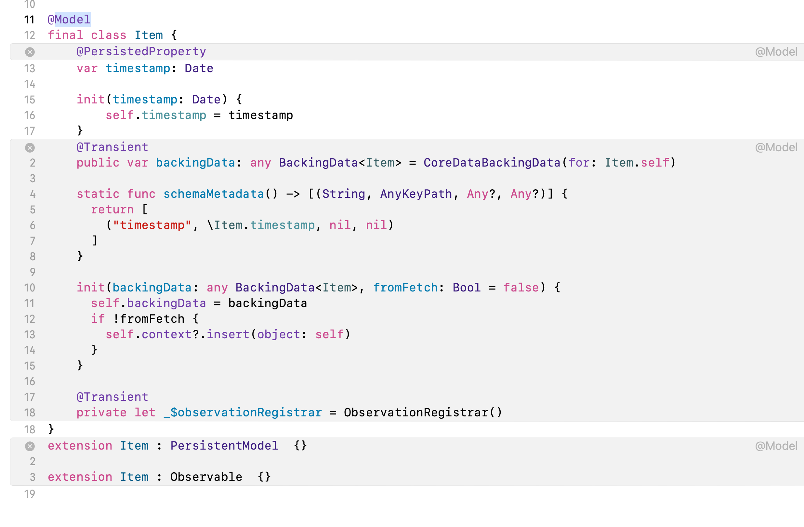

I am the author of Core Data Fundamentals with Swift, CloudKit, iOS Data Persistence: The Big Picture, and eight other courses on Pluralsight.
Deepen your understanding by watching the courses!
Add SwiftData to an Existing App
Are you looking to add SwiftData to your existing app but don't know where to start? Let's explore the steps you need to take.
System Configuration
First things first: you need the following before you can get started with SwiftData…
- You need to install Xcode 15 on your Mac.
- You need to set your app’s minimum deployment target to macOS 14, iOS 17, tvOS 17, or watchOS 10.
- Your app needs to use SwiftUI – SwiftData does not work with Storyboard apps. If you have a Storyboard app with some SwiftUI views integrated in, you can use SwiftData with those SwiftUI views. In that situation, it may be best to stick with Core Data to keep data persistence simple and consistent.
Essential Pieces of SwiftData
Once you configure your Mac, you need to understand these essential pieces of SwiftData:
- The SwiftData import (
import SwiftData) - The
@Modelmacro - The
.modelContainer()View modifier - The
@Queryproperty wrapper - The
@Environment(\.modelContext)property wrapper
Import SwiftData
Before you can use SwiftData in a Swift file, you must write import SwiftData at the top of that file.
The @Model macro
Persisting data starts with defining a data model.
This model needs to be a Swift class.
Whenever you start a brand new Xcode project and select the option to use SwiftData for the storage of your app’s data, Xcode automatically includes an Item file.
In this file, Apple includes the following code:
|
|
On line 4, the @Model macro gives the Item class all the powers it needs to let you save instances of it in a persistent store.
Curious to see what @Model does? Right-click it, and select Expand Macro. Here’s what you’ll see:

It’s not critical to understand the @Model macro in detail. It’s OK to trust it to set up everything your model class needs to work with SwiftData. What you need to do is annotate any classes in your app that you want to persist in a data store with @Model.
The .modelContainer() View modifier
Once you’ve annotated all your model classes with @Model, you need to modify your SwiftUI view – or even an entire WindowGroup – with a container that can store instances of all your model classes.
Whenever you start a brand new Xcode project and select the option to use SwiftData for storage of your app’s data, Xcode automatically writes this code in your “AppName"App Swift file:
|
|
If you have multiple model classes that you want to put into the container, replace .modelContainer(for: Item.self) with an array like this:
|
|
The @Query property wrapper
After you modify your view or WindowGroup with a modelContainer, you need to get data from the container into your view. That’s where the @Query property wrapper comes in.
Suppose this was your SwiftData model:
|
|
If you want to create a list of Items that you’ve stored with SwiftData, you’d write
|
|
Then in your view’s body, you could create a list out of the items variable:
|
|
That’s the most basic way to get data out of a SwiftData persistent store. But how do you put data in – or for that matter, update it or delete it from the persistent store?
The @Environment(\.modelContext) property wrapper
Suppose again that this was your SwiftData model:
|
|
Any time you need to insert or delete data with SwiftData, add a line of code like this to your SwiftUI view:
|
|
With modelContext, you can add data to your SwiftData store like this:
|
|
If you want to delete data, this code will do it:
|
|
What about updating data?
In most cases, you don’t need to do anything extra. modelContext has an autosave feature. When it’s enabled, modelContext saves when system events, such as your app entering the foreground or background, occur. It also saves periodically while your app is running. No extra code required!
modelContext does have a save() method that you can call if your app needs to do something like send data from SwiftData over to another system process, or share it with another person’s device. In situations like these, call modelContext.save() before you perform the action.
Wrapping Up
That takes care of adding SwiftData to one of your existing apps! There’s always more to explore, so @ me on Twitter to continue the conversation.
comments powered by Disqus